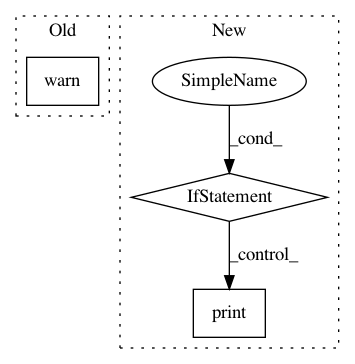

bf20758f1001f7672aaa0e2de153b3349bc722fa,snntoolbox/simulation/target_simulators/brian2_target_sim.py,SNN,save,#SNN#Any#Any#,197
Before Change
def save(self, path, filename):
warnings.warn("Saving Brian2 spiking model to disk is not yet "
"implemented.", RuntimeWarning)
def load(self, path, filename):
// TODO: Implement saving and loading Brian2 models.
After Change
print("Saving weights ...")
for i, connection in enumerate(self.connections):
filepath = os.path.join(path, self.config.get("paths", "filename_snn"), "brian2-model", self.layers[i+1].label + ".npz")
if self.config.getboolean("output", "overwrite") or confirm_overwrite(filepath):
directory = os.path.dirname(filepath)
if not os.path.exists(directory):
os.makedirs(directory)
print("Store weights of layer {} to file {}".format(self.layers[i+1].label, filepath))
np.savez(filepath, self.connections[i].w)
def load(self, path, filename):
import keras
from snntoolbox.parsing.utils import get_type
from snntoolbox.simulation.utils import get_ann_ops
In pattern: SUPERPATTERN
Frequency: 3
Non-data size: 3
Instances
Project Name: NeuromorphicProcessorProject/snn_toolbox
Commit Name: bf20758f1001f7672aaa0e2de153b3349bc722fa
Time: 2019-06-13
Author: selin.fabel@uzh.ch
File Name: snntoolbox/simulation/target_simulators/brian2_target_sim.py
Class Name: SNN
Method Name: save
Project Name: catalyst-cooperative/pudl
Commit Name: 4296d854f38a7544eb02cd72d9cdb11e215051ce
Time: 2018-07-05
Author: karldw@users.noreply.github.com
File Name: pudl/init.py
Class Name:
Method Name: _ETL_cems
Project Name: Theano/Theano
Commit Name: f7596c63874a9661abd60c4e9b09b4ff55acd1c0
Time: 2016-12-22
Author: abergeron@gmail.com
File Name: theano/gpuarray/__init__.py
Class Name:
Method Name: init_dev